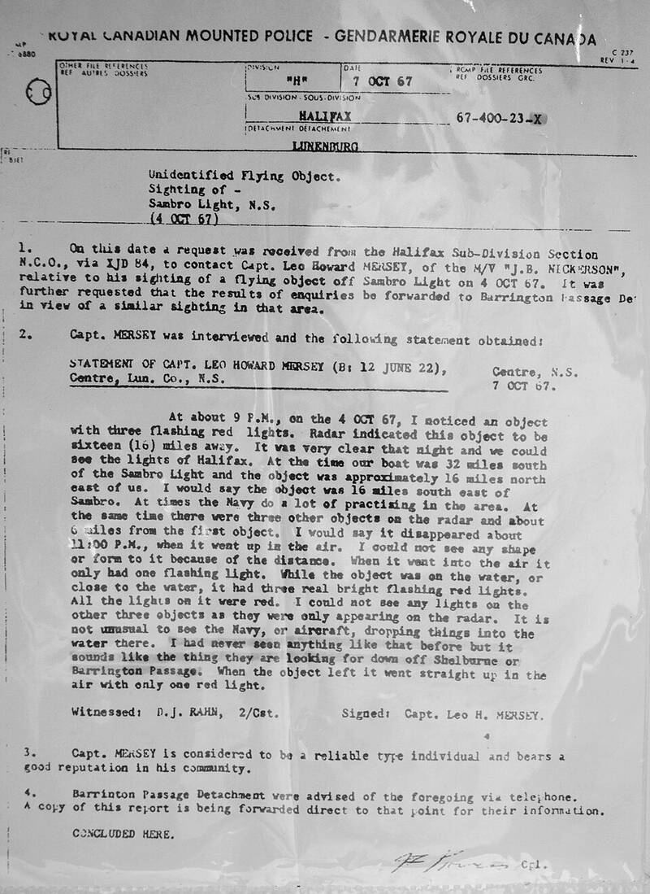

Shag Harbour incident
Nova Scotia, Canada, 1967

On October 4, 1967, witnesses saw a lit object fall into the sea. The Royal Canadian Mounted Police and navy divers searched but found nothing, and Canadian records list it as unexplained. 1
Open in the interactive Watcher
Related
Sources
- Shag Harbour UFO incident Wikipedia